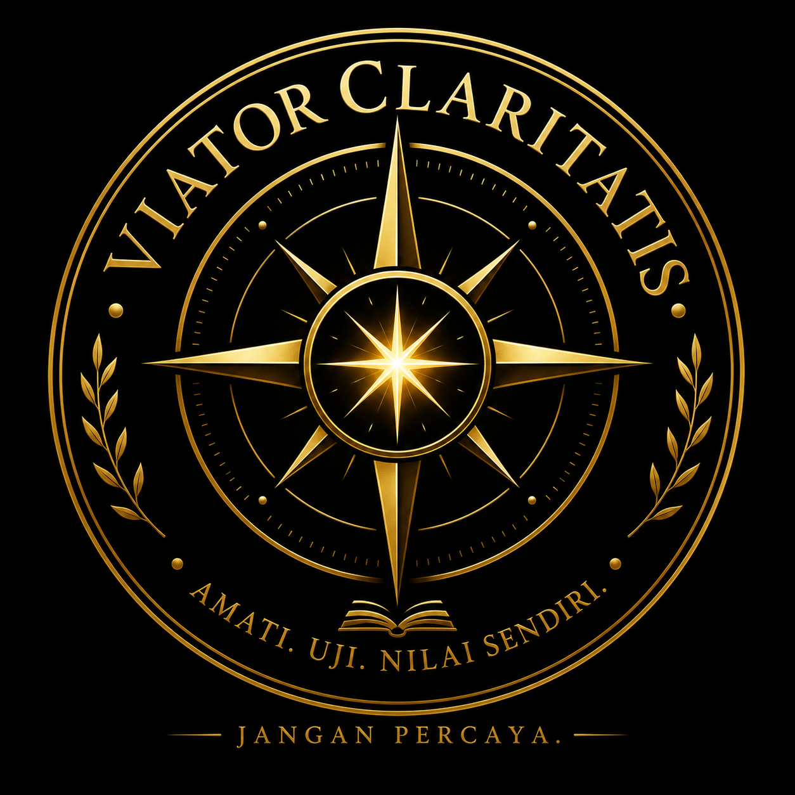

Pengembara Kejernihan.
Sebuah perjalanan untuk melihat realitas
melalui keheningan, pengamatan,
dan kesadaran yang lebih dalam.
Viator Claritatis bukanlah sebuah dogma,
bukan pula kumpulan jawaban akhir.
Ia adalah sebuah jalan perjalanan.
Seorang Viator belajar berhenti sejenak
sebelum memberikan penilaian.
Mengamati sebelum menyimpulkan.
Mempertanyakan sebelum percaya.
Dan mencari kejernihan sebelum membangun
sebuah keyakinan.
Ⅰ. Keheningan
Ruang batin tempat seseorang belajar
mendengar realitas tanpa gangguan ego.
Ⅱ. Pengamatan
Kemampuan melihat sesuatu sebagaimana adanya,
sebelum pikiran memberi label.
Ⅲ. Kejernihan
Kemampuan membedakan antara realitas,
interpretasi, dan ilusi.
Ⅳ. Kebijaksanaan
Pemahaman yang lahir dari pengalaman,
refleksi, dan keberanian menghadapi kenyataan.
Sebuah perjalanan menuju kejernihan.
Buku ini mengajak pembaca memasuki
laboratorium kehidupan:
tempat pengalaman menjadi guru,
keheningan menjadi ruang belajar,
dan realitas menjadi sumber pengamatan.
Bukan untuk memberikan semua jawaban,
tetapi untuk membangun cara melihat
yang lebih jernih.
Status: Karya dalam proses pengembangan dan publikasi.
Website resmi:
Viator Claritatis
Sebuah ruang perjalanan,
pemikiran, dan pencarian kejernihan.
© 2026